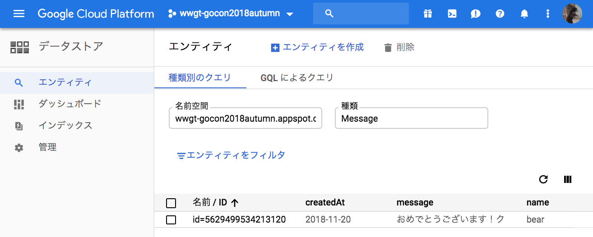

このコードラボでは, 実際に動く Go のソースコードを触ってみることで, Google App Engine でのアプリケーションの仕組みを知ることができます。

ゲストブックの仕組みを利用して, 一般的な入出力を体験します。
Google App Engine とは
Google が Google Cloud Platform 上で提供しているインフラ上でアプリケーションを実行できる PaaS です。
サーバの運用・構築の手間がかからず, ニーズに合わせたスケーリングが容易であることが利点です。
Go の開発環境は必要でしょうか？
Golang.tokyoのコードラボ や Google Cloud Shell で Go の開発をはじめよう で紹介されている Google Cloud Shell を利用するため, 手元での Go の開発環境を用意する必要はありません。
プロジェクトにアクセスする
Google Cloud Shell で Go の開発をはじめよう の手順に従って, Google Cloud Console にアクセスしましょう。
GitHubからコードラボで利用するサンプルコードを取得しましょう。
Google Cloud Shell で Go の開発をはじめよう の手順に従って, Google Cloud Shell で git clone します。
$ git clone https://github.com/WomenWhoGoTokyo/codelab.gitcodelab/guestbook というディレクトリが作られていることを, Google Cloud Shell で確認しましょう。
$ cd codelab/guestbook
$ ls
README.md app.yaml index.go init.go message.go post.go viewgit clone したファイルの中に, app.yaml があります。これは Google App Engine アプリケーションの設定ファイルです。
利用する言語やそのバージョン等を設定することができます。
runtime: go
api_version: go1.9
handlers:
url: /*
script: _go_app
secure: always取得したファイルを Google App Engine に公開してみましょう。
- app.yaml が配置されている場所でコマンドを実行します。
- アプリケーションIDとバージョンは, コマンド引数で指定します。
- 今回, バージョンには各々の Connpass ID を利用します。異なるバージョンでアプリケーションをデプロイすることで, お互いのアプリケーションの上書きを避けます。
尚, バージョンには, アルファベット小文字, 数字, ハイフンのみが利用可能です。
$ goapp deploy --application {アプリケーションID} --version {バージョン} .デプロイしたアプリケーションを確認しましょう。
アクセスする
Google Cloud Platform の AppEngine > バージョン をクリックすると, 公開するコマンドに利用したバージョンを一覧で確認できます。

一覧で, バージョン名をクリックします。

ブラウザが立ち上がり, 下記のような画面が表示されると成功です。

お名前, メッセージに適当な文字列を入力して, 送信ボタンを押下してみましょう。

データを見る
Google Cloud Platform 上でもデータを確認することができます。
データストア > エンティティ をクリックしましょう。

先程入力したデータが格納されていることを確認できます。

xxxxxxxxxxxxxxxxxxxxx
xxxxxxxxxxxxxxxxxxxxx
xxxxxxxxxxxxxxxxxxxxx
このコードラボでは, Google App Engine へのアプリケーションの公開や, 実際に動く Go のソースコードをベースとして, データの入力や取り出し, その表示方法に触れました。
ここで知れたことをきっかけに, Google App Engine と Go を利用したものづくりをもっともっと楽しんでいただけますように！と願っています。